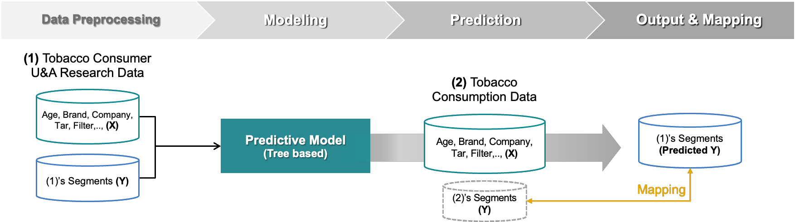
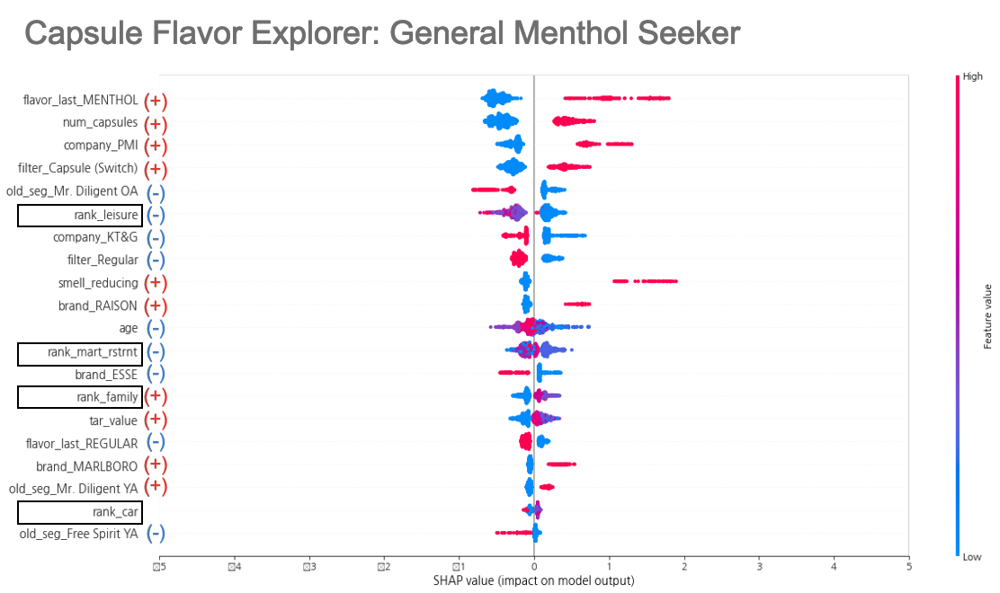
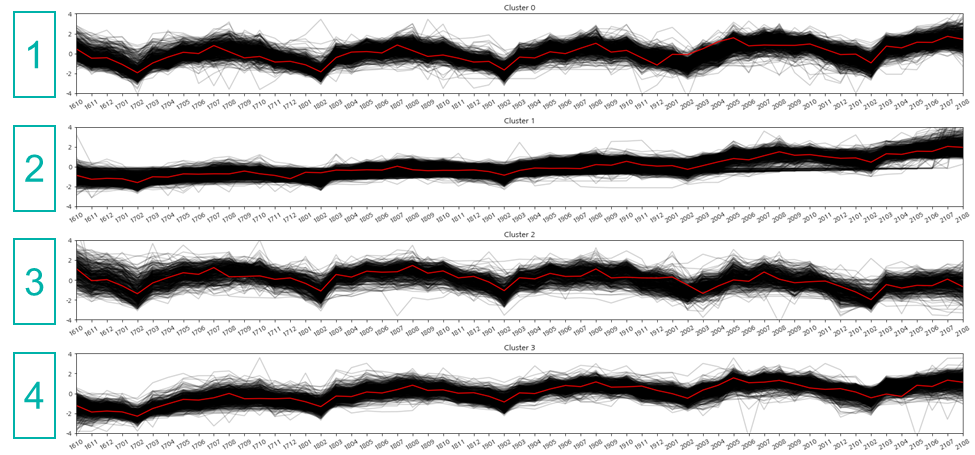
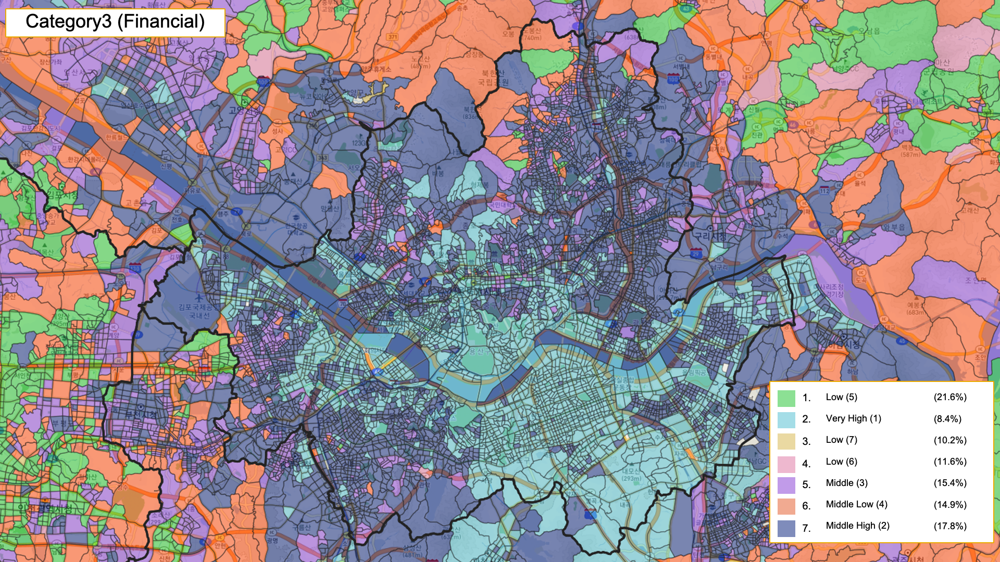
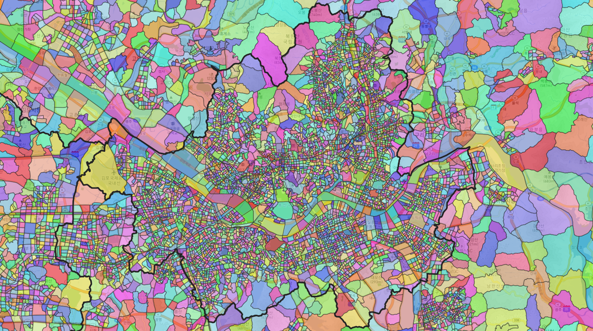

Connect customer segments to geography
An international tobacco company had a detailed customer segmentation framework, but its usage-and-attitudes survey did not include customers’ residential locations. A separate credit-card consumption dataset included postal-code information, but used a different set of segments.
As the sole analyst, I developed a method to estimate the geographic distribution of the client’s segments and combined those estimates with sales, demographic, economic, and location data to describe regional markets.
Estimate segment distribution
Learn the relationship between shared consumption features and the client’s segment labels, then translate the results into postal-code estimates.
Build regional market profiles
Develop six analytical layers that could be combined into detailed market groups and regrouped for different business questions.
The deliverables were an analysis report and enhancements to an existing web service. My responsibility covered the analytical workflow, modeling, interpretation, and geographic outputs.
Bridge two different segment definitions
The central challenge was to relate the client’s five main segments and eleven subsegments to the credit-card company’s segments. I used common consumption and demographic features to estimate a mapping between them.
| Dataset | What it contributed | Key gap |
|---|---|---|
| Client survey | Client segment labels, product preferences, spending patterns, and demographics. | No residential geography. |
| Credit-card consumption data | Consumption profiles aggregated by the card company’s segments, with postal-code distribution. | Different segment definitions. |

1. Align the shared features
I aligned product attributes, demographic variables, and major spending categories. Some spending fields were recorded as ratios in one dataset and amounts in the other. I represented selected categories with five Jenks natural-breaks grades as a practical alignment step.
The preprocessing also included outlier handling, min–max scaling of selected numeric variables, and encoding of categorical features. These choices made the modeling inputs consistent; matching feature formats alone does not guarantee that the two populations are comparable.
2. Train and interpret the segment classifier
I trained a LightGBM classifier on the survey’s client-segment labels, using a 70:30 training/test split and Bayesian hyperparameter optimization. SMOTE-NC was applied to the training portion to create synthetic minority-class examples for mixed numeric and categorical data.
I examined gain-based feature importance and SHAP values to explain which inputs contributed to segment predictions.
View an example of model interpretation

3. Translate predictions into postal-code estimates
After applying the model to the consumption data, each record had both a predicted client segment and an existing card-company segment. I calculated the predicted client-segment composition within each card segment, then applied those proportions to card-segment counts by postal code.
local card-segment count × estimated client-segment share within that card segment
This produced a many-to-many mapping between segment systems and an estimated geographic composition. I delivered the results in CSV and map formats.
These outputs are aggregate estimates. They do not identify individual survey respondents’ addresses or provide directly observed segment labels for each postal code.
Use six analytical layers to describe each market
The client needed detailed market groups that could also be regrouped for different questions. I separated the analysis into six dimensions, keeping the meaning of each layer visible before combining the results.
| Dimension | Data and method |
|---|---|
| Sales trends | Monthly regional sales, October 2016–August 2021; scaled time series and time-series k-means, with the elbow method guiding the number of clusters. |
| New-product concentration | September 2020–August 2021 sales; a location quotient comparing the regional new-product sales share with the national share. |
| Population | Resident and floating population and related demographic characteristics; UMAP followed by a Gaussian mixture model (GMM). |
| Economic characteristics | Income, card spending, and housing-price variables; UMAP followed by GMM. |
| Location characteristics | Commercial establishments, residential buildings, and public transport; UMAP followed by GMM. |
| Customer composition | Estimated client-segment proportions from Task 1; UMAP followed by GMM. |
The inputs combined monthly store sales, NICE demographic and economic aggregates, OpenMate spatial data, and the segment estimates from Task 1.

Keep each layer interpretable
For the four GMM layers, I handled missing values and outliers, scaled the inputs, and used UMAP to reduce dimensionality before clustering. I interpreted the resulting groups using their relative feature profiles.
The new-product layer used a location quotient rather than a clustering model. A value above 1 indicates a larger new-product share of sales than the national share; it does not necessarily indicate greater absolute sales volume.

Combine the layers into detailed market groups
I cross-classified the six layer outputs to create detailed regional profiles. Keeping the component labels made it possible to regroup areas by the dimensions relevant to a particular analysis.

Make the analysis usable beyond the model
Geographic estimates
Client-segment distributions by postal code, delivered as tabular data and maps.
Regional profiles
Sales-pattern groups, relative new-product concentration, and four attribute-based clustering layers.
Reporting and service updates
An analysis report and geographic outputs for enhancements to the client’s existing web service.
The project linked a customer framework without residential locations to a geographic dataset and then to a reusable set of regional descriptions. The key analytical contribution was making the mapping between datasets explicit and preserving the meaning of each market dimension.
Interpretation and limitations
- Transfer across datasets: estimates assume that relationships learned from survey responses remain useful in aggregated consumption data and across regions.
- Feature alignment: matching spending grades is a practical approximation when the original measurement scales differ.
- Evaluation scope: the original notes record a 70:30 split, but do not specify a cross-validation fold scheme or report held-out classification metrics.
- Market groups: profiles depend on the selected features and modeling choices. The delivered maps do not establish a measured marketing or sales uplift.